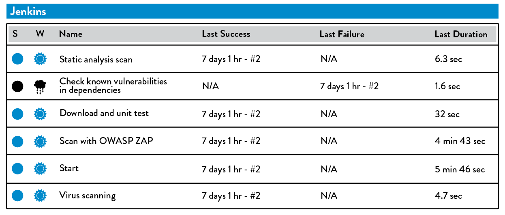
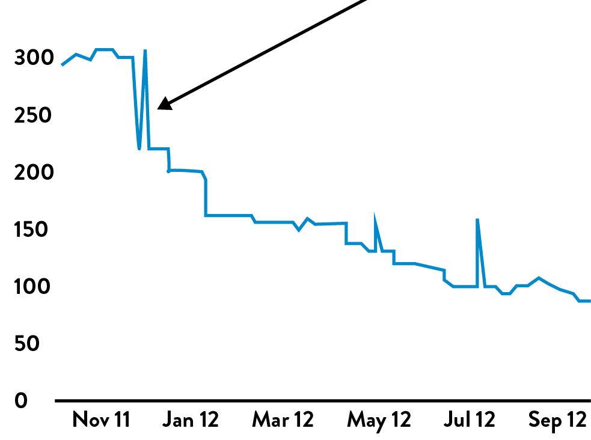
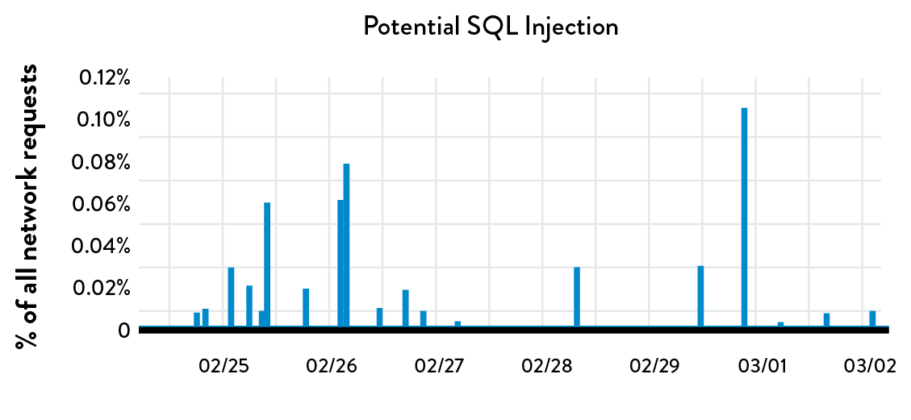

22Information Security as Everyone’s Job, Every Day
One of the top objections to implementing DevOps principles and patterns has been, “Information security and compliance won’t let us.” And yet, DevOps may be one of the best ways to better integrate information security into the daily work of everyone in the technology value stream.
When Infosec is organized as a silo outside of Development and Operations, many problems arise. James Wickett, one of the creators of the Gauntlt security tool and organizer of DevOpsDays Austin and the Lonestar Application Security conference, observed:
One interpretation of DevOps is that it came from the need to enable developers productivity, because as the number of developers grew, there weren’t enough Ops people to handle all the resulting deployment work. This shortage is even worse in Infosec—the ratio of engineers in Development, Operations, and Infosec in a typical technology organization is 100:10:1. When Infosec is that outnumbered, without automation and integrating information security into the daily work of Dev and Ops, Infosec can only do compliance checking, which is the opposite of security engineering—and besides, it also makes everyone hate us.
James Wickett and Josh Corman, former CTO of Sonatype and respected information security researcher, have written about incorporating information security objectives into DevOps, a set of practices and principles termed Rugged DevOps. Similar ideas were created by Dr. Tapabrata Pal, Director and Platform Engineering Technical Fellow at Capital One, and the Capital One team, who describe their processes as DevOpsSec, where Infosec is integrated into all stages of the SDLC. Rugged DevOps traces some of its history to Visible Ops Security, written by Gene Kim, Paul Love, and George Spafford.
Throughout The DevOps Handbook, we have explored how to fully integrate the QA and Operations objectives throughout our entire technology value stream. In this chapter, we describe how to similarly integrate Infosec objectives into our daily work, where we can increase developer and operational productivity, increase safety, and increase our security.
INTEGRATE SECURITY INTO DEVELOPMENT ITERATION DEMONSTRATIONS
One of our goals is to have feature teams engaged with Infosec as early as possible, as opposed to primarily engaging at the end of the project. One way we can do this is by inviting Infosec to the product demonstrations at the end of each development interval so that they can better understand the team goals in the context of organizational goals, observe their implementations as they are being built, and provide guidance and feedback at the earliest stages of the project, when there is the most amount of time and freedom to make corrections.
Justin Arbuckle, former chief architect at GE Capital, observes, “When it came to information security and compliance, we found that blockages at the end of the project were much more expensive than at the beginning—and Infosec blockages were among the worst. ‘Compliance by demonstration’ became one of the rituals we used to shift all this complexity earlier in the process.”
He continues, “By having Infosec involved throughout the creation of any new capability, we were able to reduce our use of static checklists dramatically and rely more on using their expertise throughout the entire software development process.”
This helped the organization achieve its goals. Snehal Antani, former CIO of Enterprise Architecture at GE Capital Americas, described their top three key business measurements were “development velocity (i.e., speed of delivering features to market), failed customer interactions (i.e., outages, errors), and compliance response time (i.e., lead time from audit request to delivery of all quantitative and qualitative information required to fulfill the request).”
When Infosec is an assigned part of the team, even if they are only being kept informed and observing the process, they gain the business context they need to make better risk-based decisions. Furthermore, Infosec is able to help feature teams learn what is required to meet security and compliance objectives.
INTEGRATE SECURITY INTO DEFECT TRACKING AND POST-MORTEMS
When possible, we want to track all open security issues in the same work tracking system that Development and Operations are using, ensuring the work is visible and can be prioritized against all other work. This is very different from how Infosec has traditionally worked, where all security vulnerabilities are stored in a GRC (governance, risk, and compliance) tool that only Infosec has access to. Instead, we will put any needed work in the systems that Dev and Ops use.
In a presentation at the 2012 Austin DevOpsDays, Nick Galbreath, who headed up Information Security at Etsy for many years, describes how they treated security issues, “We put all security issues into JIRA, which all engineers use in their daily work, and they were either ‘P1’ or ‘P2,’ meaning that they had to be fixed immediately or by the end of the week, even if the issue is only an internally-facing application.”
Furthermore, he states, “Any time we had a security issue, we would conduct a post-mortem, because it would result in better educating our engineers on how to prevent it from happening again in the future, as well as a fantastic mechanism for transferring security knowledge to our engineering teams.”
INTEGRATE PREVENTIVE SECURITY CONTROLS INTO SHARED SOURCE CODE REPOSITORIES AND SHARED SERVICES
In chapter 20, we created a shared source code repository that makes it easy for anyone to discover and reuse the collective knowledge of our organization—not only for our code, but also for our toolchains, deployment pipeline, standards, etc. By doing this, anyone can benefit from the cumulative experience of everyone in the organization.
Now we will add to our shared source code repository any mechanisms or tools that help enable us to ensure our applications and environments are secure. We will add libraries that are pre-blessed by security to fulfill specific Infosec objectives, such as authentication and encryption libraries and services. Because everyone in the DevOps value stream uses version control for anything they build or support, putting our information security artifacts there makes it much easier to influence the daily work of Dev and Ops, because anything we create is available, searchable, and reusable. Version control also serves as a omni-directional communication mechanism to keep all parties aware of changes being made.
If we have a centralized shared services organization, we may also collaborate with them to create and operate shared security-relevant platforms, such as authentication, authorization, logging, and other security and auditing services that Dev and Ops require. When engineers use one of these predefined libraries or services, they won’t need to schedule a separate security design review for that module; they’ll be using the guidance we’ve created concerning configuration hardening, database security settings, key lengths, and so forth.
To further increase the likelihood that the services and libraries we provide will be used correctly, we can provide security training to Dev and Ops, as well as review what they’ve created to help ensure that security objectives are being implemented correctly, especially for teams using these tools for the first time.
Ultimately, our goal is to provide the security libraries or services that every modern application or environment requires, such as enabling user authentication, authorization, password management, data encryption, and so forth. Furthermore, we can provide Dev and Ops with effective security-specific configuration settings for the components they use in their application stacks, such as for logging, authentication, and encryption. We may include items such as:
- Code libraries and their recommended configurations (e.g., 2FA [two-factor authentication library], bcrypt password hashing, logging)
- Secret management (e.g., connection settings, encryption keys) using tools such as Vault, sneaker, Keywhiz, credstash, Trousseau, Red October, etc.
- OS packages and builds (e.g., NTP for time syncing, secure versions of OpenSSL with correct configurations, OSSEC or Tripwire for file integrity monitoring, syslog configuration to ensure logging of critical security into our centralized ELK stack)
By putting all these into our shared source code repository, we make it easy for any engineer to correctly create and use logging and encryption standards in their applications and environments, with no further work from us.
We should also collaborate with Ops teams to create a base cookbook or build image of our OS, databases, and other infrastructure (e.g., NGINX, Apache, Tomcat), showing they are in a known, secure, and risk-reduced state. Our shared repository not only becomes the place where we can get the latest versions, but also becomes a place where we can collaborate with other engineers and monitor and alert on changes made to security-sensitive modules.
INTEGRATE SECURITY INTO OUR DEPLOYMENT PIPELINE
In previous eras, in order to harden and secure our application, we would start our security review after development was completed. Often, the output of this review would be hundreds of pages of vulnerabilities in a PDF, which we’d give to Development and Operations, which would be completely un-addressed due to project due date pressure or problems being found too late in the software life cycle to be easily corrected.
In this step, we will automate as many of our information security tests as possible, so that they run alongside all our other automated tests in our deployment pipeline, being performed (ideally) upon every code commit by Dev or Ops, and even in the earliest stages of a software project.
Our goal is to provide both Dev and Ops with fast feedback on their work so that they are notified whenever they commit changes that are potentially insecure. By doing this, we enable them to quickly detect and correct security problems as part of their daily work, which enables learning and prevents future errors.
Ideally, these automated security tests will be run in our deployment pipeline alongside the other static code analysis tools.
Tools such as Gauntlt have been designed to integrate into the deployment pipelines, which run automated security tests on our applications, our application dependencies, our environment, etc. Remarkably, Gauntlt even puts all its security tests in Gherkin syntax test scripts, which is widely used by developers for unit and functional testing. Doing this puts security testing in a framework they are likely already familiar with. This also allows security tests to easily run in a deployment pipeline on every committed change, such as static code analysis, checking for vulnerable dependencies, or dynamic testing.
 Figure 43: Jenkins running automated security testing (Source: James Wicket and Gareth Rushgrove, “Battle-tested code without the battle,” Velocity 2014 conference presentation, posted to Speakerdeck.com, June 24, 2014, https://speakerdeck.com/garethr/battle-tested-code-without-the-battle.)
By doing this, we provide everyone in the value stream with the fastest possible feedback about the security of what they are creating, enabling Dev and Ops engineers to find and fix issues quickly.
ENSURE SECURITY OF THE APPLICATION
Often, Development testing focuses on the correctness of functionality, looking at positive logic flows. This type of testing is often referred to as the happy path, which validates user journeys (and sometimes alternative paths) where everything goes as expected, with no exceptions or error conditions.
On the other hand, effective QA, Infosec, and Fraud practitioners will often focus on the sad paths, which happen when things go wrong, especially in relation to security-related error conditions. (These types of security-specific conditions are often jokingly referred to as the bad paths.)
For instance, suppose we have an e-commerce site with a customer input form that accepts credit card numbers as part of generating a customer order. We want to define all the sad and bath paths required to ensure that invalid credit cards are properly rejected to prevent fraud and security exploits, such as SQL injections, buffer overruns, and other undesirable outcomes.
Instead of performing these tests manually, we would ideally generate them as part of our automated unit or functional tests so that they can be run continuously in our deployment pipeline. As part of our testing, we will want to include the following:
- Static analysis: This is testing that we perform in a non-runtime environment, ideally in the deployment pipeline. Typically, a static analysis tool will inspect program code for all possible run-time behaviors and seek out coding flaws, back doors, and potentially malicious code (this is sometimes known as “testing from the inside-out”). Examples of tools include Brakeman, Code Climate, and searching for banned code functions (e.g., “exec()”).
- Dynamic analysis: As opposed to static testing, dynamic analysis consists of tests executed while a program is in operation. Dynamic tests monitor items such as system memory, functional behavior, response time, and overall performance of the system. This method (sometimes known as “testing from the outside-in”) is similar to the manner in which a malicious third party might interact with an application. Examples include Arachni and OWASP ZAP (Zed Attack Proxy).† Some types of penetration testing can also be performed in an automated fashion and should be included as part of dynamic analysis using tools such as Nmap and Metasploit. Ideally, we should perform automated dynamic testing during the automated functional testing phase of our deployment pipeline, or even against our services while they are in production. To ensure correct security handling, tools like OWASP ZAP can be configured to attack our services through a web browser proxy and inspect the network traffic within our test harness.
- Dependency scanning: Another type of static testing we would normally perform at build time inside of our deployment pipeline involves inventorying all our dependencies for binaries and executables, and ensuring that these dependencies, which we often don’t have control over, are free of vulnerabilities or malicious binaries. Examples include Gemnasium and bundler audit for Ruby, Maven for Java, and the OWASP Dependency-Check.
- Source code integrity and code signing: All developers should have their own PGP key, perhaps created and managed in a system such as keybase.io. All commits to version control should be signed—that is straightforward to configure using the open source tools gpg and git. Furthermore, all packages created by the CI process should be signed, and their hash recorded in the centralized logging service for audit purposes.
Furthermore, we should define design patterns to help developers write code to prevent abuse, such as putting in rate limits for our services and graying out submit buttons after they have being pressed. OWASP publishes a great deal of useful guidance such as the Cheat Sheet series, which includes:
- How to store passwords
- How to handle forgotten passwords
- How to handle logging
- How to prevent cross-site scripting (XSS) vulnerabilities
Case Study
Static Security Testing at Twitter (2009)
The “10 Deploys per Day: Dev and Ops Cooperation at Flickr” presentation by John Allspaw and Paul Hammond is famous for catalyzing the Dev and Ops community in 2009. The equivalent for the information security community is likely the presentation that Justin Collins, Alex Smolen, and Neil Matatall gave on their information security transformation work at Twitter at the AppSecUSA conference in 2012.
Twitter had many challenges due to hyper-growth. For years, the famous Fail Whale error page would be displayed when Twitter did not have sufficient capacity to keep up with user demand, showing a graphic of a whale being lifted by eight birds. The scale of user growth was breathtaking—between January and March 2009, the number of active Twitter users went from 2.5 million to 10 million.
Twitter also had security problems during this period. In early 2009, two serious security breaches occurred. First, in January the @BarackObama Twitter account was hacked. Then in April, the Twitter administrative accounts were compromised through a brute-force dictionary attack. These events led the Federal Trade Commission to judge that Twitter was misleading its users into believing that their accounts were secure and issued an FTC consent order.
The consent order required that Twitter comply within sixty days by instituting a set of processes that were to be enforced for the following twenty years and would do the following:
- Designate an employee or employees to be responsible for Twitter’s information security plan
- Identify reasonably foreseeable risks, both internal and external, that could lead to an intrusion incident and create and implement a plan to address these risks‡
- Maintain the privacy of user information, not just from outside sources but also internally, with an outline of possible sources of verification and testing of the security and correctness of these implementations
The group of engineers assigned to solve this problem had to integrate security into the daily work of Dev and Ops and close the security holes that allowed the breaches to happen in the first place.
In their previously mentioned presentation, Collins, Smolen, and Matatall identified several problems they needed to address:
- Prevent security mistakes from being repeated: They found that they were fixing the same defects and vulnerabilities over and over again. They needed to modify the system of work and automation tools to prevent the issues from happening again.
- Integrate security objectives into existing developer tools: They identified early on that the major source of vulnerabilities were code issues. They couldn’t run a tool that generated a huge PDF report and then email it to someone in Development or Operations. Instead, they needed to provide the developer who had created the vulnerability with the exact information needed to fix it.
- Preserve trust of Development: They needed to earn and maintain the trust of Development. That meant they needed to know when they sent Development false positives, so they could fix the error that prompted the false positive and avoid wasting Development’s time.
- Maintain fast flow through Infosec through automation: Even when code vulnerability scanning was automated, Infosec still had to do lots of manual work and waiting. They had to wait for the scan to complete, get back the big stack of reports, interpret the reports, and then find the person responsible for fixing it. And when the code changed, it had to be done all over again. By automating the manual work, they did fewer dumb “button-pushing” tasks, enabling them to use more creativity and judgment.
- Make everything security related self-service, if possible: They trusted that most people wanted to do the right thing, so it was necessary to provide them with all the context and information they needed to fix any issues.
- Take a holistic approach to achieving Infosec objectives: Their goal was to do analysis from all the angles: source code, the production environment, and even what their customers were seeing.
The first big breakthrough for the Infosec team occured during a company-wide hack week when they integrated static code analysis into the Twitter build process. The team used Brakeman, which scans Ruby on Rails applications for vulnerabilities. The goal was to integrate security scanning into the earliest stages of the Development process, not just when the code was committed into the source code repo.
 Figure 44: Number of Brakeman security vulnerabilities detected
The results of integrating security testing into the development process were breathtaking. Over the years, by creating fast feedback for developers when they write insecure code and showing them how to fix the vulnerabilities, Brakeman has reduced the rate of vulnerabilities found by 60%, as shown in figure 44. (The spikes are usually associated with new releases of Brakeman.)
This cases study illustrates just how necessary it is to integrate security into the daily work and tools of DevOps and how effectively it can work. Doing so mitigates security risk, reduces the probability of vulnerabilities in the system, and helps teach developers to write more secure code.
ENSURE SECURITY OF OUR SOFTWARE SUPPLY CHAIN
Josh Corman observed that as developers “we are no longer writing customized software—instead, we assemble what we need from open source parts, which has become the software supply chain that we are very much reliant upon.” In other words, when we use components or libraries—either commercial or open source—in our software, we not only inherit their functionality, but also any security vulnerabilities they contain.
When selecting software, we detect when our software projects are relying on components or libraries that have known vulnerabilities, and help developers choose the components they use deliberately and with due care, selecting those components (e.g., open source projects) that have a demonstrated history of quickly fixing software vulnerabilities. We also look for multiple versions of the same library being used across our production landscape, particularly the presence of older versions of libraries which contain known vulnerabilities.
Examining cardholder data breaches shows how important the security of open source components we choose can be. Since 2008, the annual Verizon PCI Data Breach Investigation Report (DBIR) has been the most authoritative voice on data breaches where cardholder data was lost or stolen. In the 2014 report, they studied over eighty-five thousand breaches to better understand where attacks were coming from, how cardholder data was stolen, and factors leading to the breach.
The DBIR found that ten vulnerabilities (i.e., CVEs) accounted for almost 97% of the exploits used in studied cardholder data breaches in 2014. Of these ten vulnerabilities, eight of them were over ten years old.
The 2015 Sonatype State of the Software Supply Chain Report further analyzed the vulnerability data from the Nexus Central Repository. In 2015, this repository provided the build artifacts for over 605,000 open source projects, servicing over seventeen billion download requests of artifacts and dependencies primarily for the Java platform, originating from 106,000 organizations.
The report included these startling findings:
- The typical organization relied upon 7,601 build artifacts (i.e., software suppliers or components) and used 18,614 different versions (i.e., software parts).
- Of those components being used, 7.5% had known vulnerabilities, with over 66% of those vulnerabilities being over two years old without having been resolved.
The last statistic confirms another information security study by Dr. Dan Geer and Josh Corman, which showed that of the open source projects with known vulnerabilities registered in the National Vulnerability Database, only 41% were ever fixed and required, on average, 390 days to publish a fix. For those vulnerabilities that were labeled at the highest severity (i.e., those scored as CVSS level 10), fixes required 224 days.§
ENSURE SECURITY OF THE ENVIRONMENT
In this step, we should do whatever is required to help ensure that the environments are in a hardened, risk-reduced state. Although we may have created known, good configurations already, we must put in monitoring controls to ensure that all production instances match these known good states.
We do this by generating automated tests to ensure that all appropriate settings have been correctly applied for configuration hardening, database security settings, key lengths, and so forth. Furthermore, we will use tests to scan our environments for known vulnerabilities.¶
Another category of security verification is understanding actual environments (i.e., “as they actually are”). Examples of tools for this include Nmap to ensure that only expected ports are open and Metasploit to ensure that we’ve adequately hardened our environments against known vulnerabilities, such as scanning with SQL injection attacks. The output of these tools should be put into our artifact repository and compared with the previous version as part of our functional testing process. Doing this will help us detect any undesirable changes as soon as they occur.
Case Study
18F Automating Compliance for the Federal Government with Compliance Masonry
US Federal Government agencies were projected to spend nearly $80 billion on IT in 2016, supporting the mission of all the executive branch agencies. Regardless of agency, to take any system from “dev complete” to “live in production” requires obtaining an Authority to Operate (ATO) from a Designated Approving Authority (DAA). The laws and policies that govern complience in government are comprised of tens of documents that together number over four thousand pages, littered with acronyms such as FISMA, FedRAMP, and FITARA. Even for systems that only require low levels of confidentiality, integrity, and availability, over one hundred controls must be implemented, documented, and tested. It typically takes between eight and fourteen months for an ATO to be granted following “dev complete.”
The 18F team in the federal government’s General Services Administration has taken a multi-pronged approach to solving this problem. Mike Bland explains, “18F was created within the General Services Administration to capitalize on the momentum generated by the Healthcare.gov recovery to reform how the government builds and buys software.”
One 18F effort is a platform as a service called Cloud.gov, created from open source components. Cloud.gov runs on AWS GovCloud at present. Not only does the platform handle many of the operational concerns delivery teams might otherwise have to take care of, such as logging, monitoring, alerting, and service lifecycle management, it also handles the bulk of compliance concerns. By running on this platform, a large majority of the controls that government systems must implement can be taken care of at the infrastructure and platform level. Then, only the remaining controls that are in scope at the application layer have to be documented and tested, significantly reducing the compliance burden and the time it takes to receive an ATO.
AWS GovCloud has already been approved for use for federal government systems of all types, including those which require high levels of confidentiality, integrity, and availability. By the time you read this book, it is expected that Cloud.gov will be approved for all systems that require moderate levels of confidentiality, integrity, and availability.**
Furthermore, the Cloud.gov team is building a framework to automate the creation of system security plans (SSPs), which are “comprehensive descriptions of the system’s architecture, implemented controls, and general security posture…[which are] often incredibly complex, running several hundred pages in length.” They developed a prototype tool called compliance masonry so that SSP data is stored in machine-readable YAML and then turned into GitBooks and PDFs automatically.
18F is dedicated to working in the open and publishes its work open source in the public domain. You can find compliance masonry and the components that make up Cloud.gov in 18F’s GitHub repositories—you can even stand up your own instance of Cloud.gov. The work on open documentation for SSPs is being done in close partnership with the OpenControl community.
INTEGRATE INFORMATION SECURITY INTO PRODUCTION TELEMETRY
Marcus Sachs, one of the Verizon Data Breach researchers, observed in 2010, “Year after year, in the vast majority of cardholder data breaches, the organization detected the security breach months or quarters after the breach occurred. Worse, the way the breach was detected was not an internal monitoring control, but was far more likely someone outside of the organization, usually a business partner or the customer who notices fraudulent transactions. One of the primary reasons for this is that no one in the organization was regularly reviewing the log files.”
In other words, internal security controls are often ineffective in successfully detecting breaches in a timely manner, either because of blind spots in our monitoring or because no one in our organization is examining the relevant telemetry in their daily work.
In chapter 14, we discussed creating a culture in Dev and Ops where everyone in the value stream is creating production telemetry and metrics, making them visible in prominent public places so that everyone can see how our services are performing in production. Furthermore, we explored the necessity of relentlessly seeking ever-weaker failure signals so that we can find and fix problems before they result in a catastrophic failure.
Here, we deploy the monitoring, logging, and alerting required to fulfill our information security objectives throughout our applications and environments, as well as ensure that it is adequately centralized to facilitate easy and meaningful analysis and response.
We do this by integrating our security telemetry into the same tools that Development, QA, and Operations are using, giving everyone in the value stream visibility into how their application and environments are performing in a hostile threat environment where attackers are constantly attempting to exploit vulnerabilities, gain unauthorized access, plant backdoors, commit fraud, perform denials-of-service, and so forth.
By radiating how our services are being attacked in the production environment, we reinforce that everyone needs to be thinking about security risks and designing countermeasures in their daily work.
CREATING SECURITY TELEMETRY IN OUR APPLICATIONS
In order to detect problematic user behavior that could be an indicator or enabler of fraud and unauthorized access, we must create the relevant telemetry in our applications.
Examples may include:
- Successful and unsuccessful user logins
- User password resets
- User email address resets
- User credit card changes
For instance, as an early indicator of brute-force login attempts to gain unauthorized access, we might display the ratio of unsuccessful login attempts to successful logins. And, of course, we should create alerting around important events to ensure we can detect and correct issues quickly.
CREATING SECURITY TELEMETRY IN OUR ENVIRONMENT
In addition to instrumenting our application, we also need to create sufficient telemetry in our environments so that we can detect early indicators of unauthorized access, especially in the components that are running on infrastructure that we do not control (e.g., hosting environments, in the cloud).
We need to monitor and potentially alert on items, including the following:
- OS changes (e.g., in production, in our build infrastructure)
- Security group changes
- Changes to configurations (e.g., OSSEC, Puppet, Chef, Tripwire)
- Cloud infrastructure changes (e.g., VPC, security groups, users and privileges)
- XSS attempts (i.e., “cross-site scripting attacks”)
- SQLi attempts (i.e., “SQL injection attacks”)
- Web server errors (e.g., 4XX and 5XX errors)
We also want to confirm that we’ve correctly configured our logging so that all telemetry is being sent to the right place. When we detect attacks, in addition to logging that it happened, we may also choose to block access and store information about the source to aid us in choosing the best mitigation actions.
Case Study
Instrumenting the Environment at Etsy (2010)
In 2010, Nick Galbreath was director of engineering at Etsy and responsible for information security, fraud control, and privacy. Galbreath defined fraud as when “the system works incorrectly, allowing invalid or un-inspected input into the system, causing financial loss, data loss/theft, system downtime, vandalism, or an attack on another system.”
To achieve these goals, Galbreath did not create a separate fraud control or information security department; instead, he embedded those responsibilities throughout the DevOps value stream.
Galbreath created security-related telemetry that were displayed alongside all the other more Dev and Ops oriented metrics, which every Etsy engineer routinely saw:
- Abnormal production program terminations (e.g., segmentation faults, core dumps, etc.): “Of particular concern was why certain processes kept dumping core across our entire production environment, triggered from traffic coming from the one IP address, over and over again. Of equal concern were those HTTP ‘500 Internal Server Errors.’ These are indicators that a vulnerability was being exploited to gain unauthorized access to our systems, and that a patch needs to be urgently applied.”
- Database syntax error: “We were always looking for database syntax errors inside our code—these either enabled SQL Injection attacks or were actual attacks in progress. For this reason, we had zero-tolerance for database syntax errors in our code, because it remains one of the leading attack vectors used to compromise systems.”
- Indications of SQL injection attacks: “This was a ridiculously simple test—we’d merely alert whenever ‘UNION ALL’ showed up in user-input fields, since it almost always indicates a SQL injection attack. We also added unit tests to make sure that this type of uncontrolled user input could never be allowed into our database queries.”
 Figure 45: Developers would see SQL injection attempts in Graphite at Etsy (Source: “DevOpsSec: Appling DevOps Priciples to Security, DevOpsDays Austin 2012,” SlideShare.net, posted by Nick Galbreath, April 12, 2012, http://www.slideshare.net/nickgsuperstar/devopssec-apply-devops-principles-to-security.)
Figure 45 is an example of a graph that every developer would see, which shows the number of potential SQL injection attacks that were attempted in the production environment. As Galbreath observed, “Nothing helps developers understand how hostile the operating environment is than seeing their code being attacked in real-time.”
Galbreath observed, “One of the results of showing this graph was that developers realized that they were being attacked all the time! And that was awesome, because it changed how developers thought about the security of their code as they were writing the code.”
PROTECT OUR DEPLOYMENT PIPELINE
The infrastructure that supports our continuous integration and continuous deployment processes also presents a new surface area vulnerable to attack. For instance, if someone compromises the servers running deployment pipeline that has the credentials for our version control system, it could enable someone to steal source code. Worse, if the deployment pipeline has write access, an attacker could also inject malicious changes into our version control repository, and, therefore, inject malicious changes into our application and services.
As Jonathan Claudius, former Senior Security Tester at TrustWave SpiderLabs, observed, “Continuous build and test servers are awesome, and I use them myself. But I started thinking about ways to use CI/CD as a way to inject malicious code. Which led to the question of where would be a good place to hide malicious code? The answer was obvious: in the unit tests. No one actually looks at the unit tests, and they’re run every time someone commits code to the repo.”
This demonstrates that in order to adequately protect the integrity of our applications and environments, we must also mitigate the attack vectors on our deployment pipeline. Risks include developers introducing code that enables unauthorized access (which we’ve mitigated through controls such as code testing, code reviews, and penetration testing) and unauthorized users gaining access to our code or environment (which we’ve mitigated through controls such as ensuring configurations match known, good states, and effective patching).
However, in order to protect our continuous build, integration, or deployment pipeline, our mitigation strategies may include:
- Hardening continuous build and integration servers and ensuring we can reproduce them in an automated manner, just as we would for infrastructure that supports customer-facing production services, to prevent our continuous build and integration servers from being compromised
- Reviewing all changes introduced into version control, either through pair programming at commit time or by a code review process between commit and merge into trunk, to prevent continuous integration servers from running uncontrolled code (e.g., unit tests may contain malicious code that allows or enables unauthorized access)
- Instrumenting our repository to detect when test code contains suspicious API calls (e.g., unit tests accessing the filesystem or network) is checked in to the repository, perhaps quarantining it and triggering an immediate code review
- Ensuring every CI process runs on its own isolated container or VM
- Ensuring the version control credentials used by the CI system are read-only
CONCLUSION
Throughout this chapter we have described ways to integrate information security objectives into all stages of our daily work. We do this by integrating security controls into the mechanisms we’ve already created, ensuring that all on-demand environments are also in a hardened, risk-reduced state—by integrating security testing into the deployment pipeline and ensuring the creation of security telemetry in pre-production and production environments. By doing so, we enable developer and operational productivity to increase while simultaneously increasing our overall safety. Our next step is to protect the deployment pipeline.

Table of contents
- Preface
- Foreword
- Imagine a World Where Dev and Ops Become DevOps
-
Part I The Three Ways
- A BRIEF HISTORY
- 1 Agile, Continuous Delivery, and the Three Ways
- 2 The First Way: The Principles of Flow
- 3 The Second Way: The Principles of Feedback
- 4 The Third Way: The Principles of Continual Learning and Experimentation
-
Part II Where to Start
- Introduction
- 5 Selecting Which Value Stream to Start With
- 6 Understanding the Work in Our Value Stream, Making it Visible, and Expanding it Across the Organization
-
7 How to Design Our Organization and Architecture with Conway’s Law in Mind
- ORGANIZATIONAL ARCHETYPES
- PROBLEMS OFTEN CAUSED BY OVERLY FUNCTIONAL ORIENTATION (“OPTIMIZING FOR COST”)
- ENABLE MARKET-ORIENTED TEAMS (“OPTIMIZING FOR SPEED”)
- MAKING FUNCTIONAL ORIENTATION WORK
- TESTING, OPERATIONS, AND SECURITY AS EVERYONE’S JOB, EVERY DAY
- ENABLE EVERY TEAM MEMBER TO BE A GENERALIST
- FUND NOT PROJECTS, BUT SERVICES AND PRODUCTS
- DESIGN TEAM BOUNDARIES IN ACCORDANCE WITH CONWAY’S LAW
- CREATE LOOSELY-COUPLED ARCHITECTURES TO ENABLE DEVELOPER PRODUCTIVITY AND SAFETY
- CONCLUSION
- 8 How to Get Great Outcomes by Integrating Operations into the Daily Work of Development
-
PART III—THE FIRST WAY: THE TECHNICAL PRACTICES OF FLOW
- 9 Create the Foundations of Our Deployment Pipeline
-
10 Enable Fast and Reliable Automated Testing
- CONTINUOUSLY BUILD, TEST, AND INTEGRATE OUR CODE AND ENVIRONMENTS
-
BUILD A FAST AND RELIABLE AUTOMATED VALIDATION TEST SUITE
- CATCH ERRORS AS EARLY IN OUR AUTOMATED TESTING AS POSSIBLE
- ENSURE TESTS RUN QUICKLY (IN PARALLEL, IF NECESSARY)
- WRITE OUR AUTOMATED TESTS BEFORE WE WRITE THE CODE (“TEST-DRIVEN DEVELOPMENT”)
- AUTOMATE AS MANY OF OUR MANUAL TESTS AS POSSIBLE
- INTEGRATE PERFORMANCE TESTING INTO OUR TEST SUITE
- INTEGRATE NON-FUNCTIONAL REQUIREMENTS TESTING INTO OUR TEST SUITE
- PULL OUR ANDON CORD WHEN THE DEPLOYMENT PIPELINE BREAKS
- CONCLUSION
- 11 Enable and Practice Continuous Integration
- 12 Automate and Enable Low-Risk Releases
- 13 Architect for Low-Risk Releases
-
PART IV—THE SECOND WAY: THE TECHNICAL PRACTICES OF FEEDBACK
- Introduction
-
14 Create Telemetry to Enable Seeing and Solving Problems
- CREATE OUR CENTRALIZED TELEMETRY INFRASTRUCTURE
- CREATE APPLICATION LOGGING TELEMETRY THAT HELPS PRODUCTION
- USE TELEMETRY TO GUIDE PROBLEM SOLVING
- ENABLE CREATION OF PRODUCTION METRICS AS PART OF DAILY WORK
- CREATE SELF-SERVICE ACCESS TO TELEMETRY AND INFORMATION RADIATORS
- FIND AND FILL ANY TELEMETRY GAPS
- CONCLUSION
- 15 Analyze Telemetry to Better Anticipate Problems and Achieve Goals
- 16 Enable Feedback So Development and Operations Can Safely Deploy Code
- 17 Integrate Hypothesis-Driven Development and A/B Testing into Our Daily Work
-
18 Create Review and Coordination Processes to Increase Quality of Our Current Work
- THE DANGERS OF CHANGE APPROVAL PROCESSES
- POTENTIAL DANGERS OF “OVERLY CONTROLLING CHANGES”
- ENABLE COORDINATION AND SCHEDULING OF CHANGES
- ENABLE PEER REVIEW OF CHANGES
- POTENTIAL DANGERS OF DOING MORE MANUAL TESTING AND CHANGE FREEZES
- ENABLE PAIR PROGRAMMING TO IMPROVE ALL OUR CHANGES
- FEARLESSLY CUT BUREAUCRATIC PROCESSES
- CONCLUSION
- PART IV CONCLUSION
-
PART V—THE THIRD WAY: THE TECHNICAL PRACTICES OF CONTINUAL LEARNING AND EXPERIMENTATION
- Introduction
-
19 Enable and Inject Learning into Daily Work
- ESTABLISH A JUST, LEARNING CULTURE
- SCHEDULE BLAMELESS POST-MORTEM MEETINGS AFTER ACCIDENTS OCCUR
- PUBLISH OUR POST-MORTEMS AS WIDELY AS POSSIBLE
- DECREASE INCIDENT TOLERANCES TO FIND EVER-WEAKER FAILURE SIGNALS
- REDEFINE FAILURE AND ENCOURAGE CALCULATED RISK-TAKING
- INJECT PRODUCTION FAILURES TO ENABLE RESILIENCE AND LEARNING
- INSTITUTE GAME DAYS TO REHEARSE FAILURES
- CONCLUSION
-
20 Convert Local Discoveries into Global Improvements
- USE CHAT ROOMS AND CHAT BOTS TO AUTOMATE AND CAPTURE ORGANIZATIONAL KNOWLEDGE
- AUTOMATE STANDARDIZED PROCESSES IN SOFTWARE FOR RE-USE
- CREATE A SINGLE, SHARED SOURCE CODE REPOSITORY FOR OUR ENTIRE ORGANIZATION
- SPREAD KNOWLEDGE BY USING AUTOMATED TESTS AS DOCUMENTATION AND COMMUNITIES OF PRACTICE
- DESIGN FOR OPERATIONS THROUGH CODIFIED NON-FUNCTIONAL REQUIREMENTS
- BUILD REUSABLE OPERATIONS USER STORIES INTO DEVELOPMENT
- ENSURE TECHNOLOGY CHOICES HELP ACHIEVE ORGANIZATIONAL GOALS
- CONCLUSION
- 21 Reserve Time to Create Organizational Learning and Improvement
-
22 Information Security as Everyone’s Job, Every Day
- INTEGRATE SECURITY INTO DEVELOPMENT ITERATION DEMONSTRATIONS
- INTEGRATE SECURITY INTO DEFECT TRACKING AND POST-MORTEMS
- INTEGRATE PREVENTIVE SECURITY CONTROLS INTO SHARED SOURCE CODE REPOSITORIES AND SHARED SERVICES
- INTEGRATE SECURITY INTO OUR DEPLOYMENT PIPELINE
- ENSURE SECURITY OF THE APPLICATION
- ENSURE SECURITY OF OUR SOFTWARE SUPPLY CHAIN
- ENSURE SECURITY OF THE ENVIRONMENT
- INTEGRATE INFORMATION SECURITY INTO PRODUCTION TELEMETRY
- CREATING SECURITY TELEMETRY IN OUR APPLICATIONS
- CREATING SECURITY TELEMETRY IN OUR ENVIRONMENT
- PROTECT OUR DEPLOYMENT PIPELINE
- CONCLUSION
-
23 Protecting the Deployment Pipeline
- INTEGRATE SECURITY AND COMPLIANCE INTO CHANGE APPROVAL PROCESSES
- RE-CATEGORIZE THE MAJORITY OF OUR LOWER RISK CHANGES AS STANDARD CHANGES
- WHAT TO DO WHEN CHANGES ARE CATEGORIZED AS NORMAL CHANGES
- REDUCE RELIANCE ON SEPARATION OF DUTY
- ENSURE DOCUMENTATION AND PROOF FOR AUDITORS AND COMPLIANCE OFFICERS
- CONCLUSION
- PART VI CONCLUSION
- A Call to Action
-
Appendices
- APPENDIX 1 THE CONVERGENCE OF DEVOPS
- APPENDIX 2 THEORY OF CONSTRAINTS AND CORE, CHRONIC CONFLICTS
- APPENDIX 3 TABULAR FORM OF DOWNWARD SPIRAL
- APPENDIX 4 THE DANGERS OF HANDOFFS AND QUEUES
- APPENDIX 5 MYTHS OF INDUSTRIAL SAFETY
- APPENDIX 6 THE TOYOTA ANDON CORD
- APPENDIX 7 COTS SOFTWARE
- APPENDIX 8 POST-MORTEM MEETINGS
- APPENDIX 9 THE SIMIAN ARMY
- APPENDIX 10 TRANSPARENT UPTIME
- Additional Resources
- Endnotes
- Index
- Acknowledgments
- Author Biographies